Paso 3, rehecho. Ya no son piezas sobre una página que se desplaza entera: es una app. El marco no se mueve, la entrada se pagina, y el contenido es el del escritorio, de la misma fuente.
La cabecera y la barra inferior quedan fijas; sólo la superficie corre. El Futuro se recorre de lado, página completa, sin desplazamiento vertical. Las otras secciones son listas que corren dentro de su zona. Dos niveles de navegación: la hamburguesa para los módulos, la barra inferior para las superficies del CEO. La gramática §5·G no se tocó.
✓ Tile con la anatomía de «Mi Semana»: llena sin scroll en la gama moderna; airoso y sin recortes en los equipos cortosDos niveles de navegación, cada uno en su lugar. El marco nunca se desplaza: se calcula con unidades dinámicas (dvh) y áreas seguras, no con 100vh. El app-shell es el de la casa (Cash Market), heredado verbatim; la hamburguesa y su panel son pieza nueva.
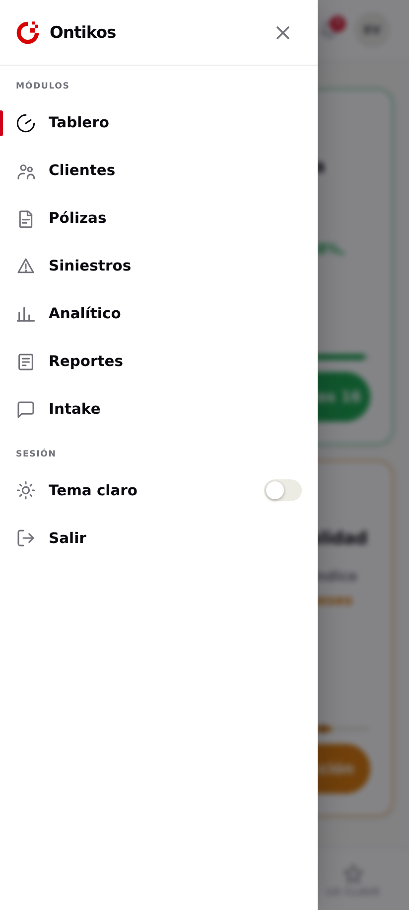
Lleva lo que en el escritorio es el riel lateral: los 7 módulos reales —Tablero, Clientes, Pólizas, Siniestros, Analítico, Reportes, Intake— tomados de navegacion.js. Entra desde el costado con fondo de bloqueo, foco al cerrar, y cierre por botón y por toque en el fondo.
La .bnav de Cash Market con las cuatro superficies del CEO —El Futuro · Quiebres · Compromisos · Lo clave— y el activo en tinta, no en rojo.
Hamburguesa · el ícono de Ontikos como botón de inicio (del kit, copiado no redibujado): toca → El Futuro, con el gesto del escritorio (el anillo gira una vuelta, los módulos entran escalonados) · EN VIVO·CIERRE · campana · avatar. Respeta el área segura superior (isla / notch). El gesto se re-dispara reinsertando el símbolo (línea de tiempo SMIL nueva), como el key={gesto} del escritorio; respeta prefers-reduced-motion.
La .app se fija a la altura del viewport con dvh (no 100vh, que miente en iOS); cabecera y barra quedan fijas por el flujo del flex, y la superficie .sa es el único scroller. Es el app-shell iOS-correcto de la casa, heredado tal cual.
Anatomía leída del código de la referencia viva (ontikos/mi-semana.html, la tarjeta que el dueño señaló como bien hecha), no de un resumen: tarjeta de radio 16 con sombra sutil y borde en el color del estado; dentro, ícono grande en el estado · título (700) · la cifra con su pie · una línea de contexto · barra delgada (6 px, 999) con muesca de referencia (industria 84%, umbral 65%) · un botón-píldora a lo ancho, relleno en el estado, ≥46 px (instrumento, no juguete). El contenido se reparte en dos bloques —arriba el texto, abajo barra+botón— con space-between, de modo que el alto sobrante es aire repartido, no un hueco: la tarjeta respira como la referencia. Color = estado en borde + ícono + barra + botón (nunca sólo matiz: lo acompañan la forma del ícono y la palabra del contexto). El arco de escritorio no entra en el tile: vive en la hoja. La grilla se adapta sola (minmax(min-content, 1fr)): en el teléfono alto el 2×2 llena la pantalla sin scroll; en el corto las tarjetas guardan su alto airoso y la entrada se desplaza —como la propia «Mi Semana»—, sin recortar nunca el botón. La marca de la cabecera es el botón de inicio con el gesto del escritorio.
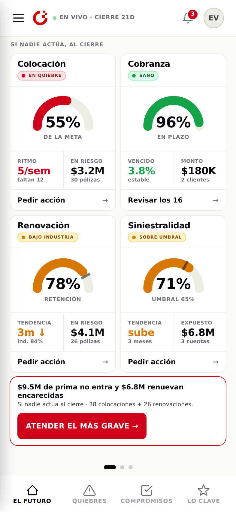
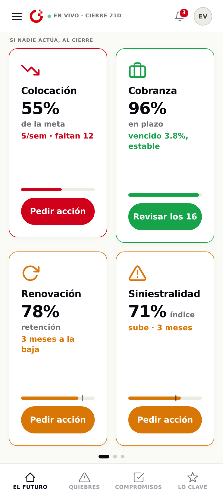
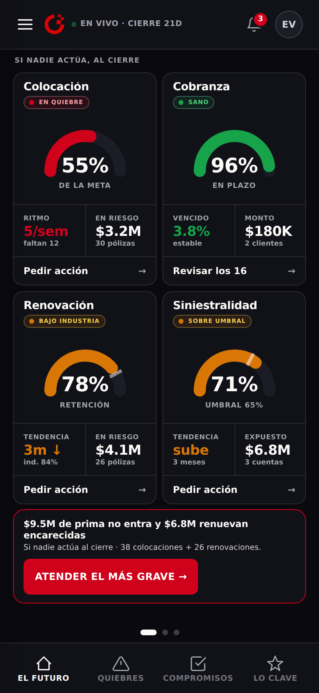
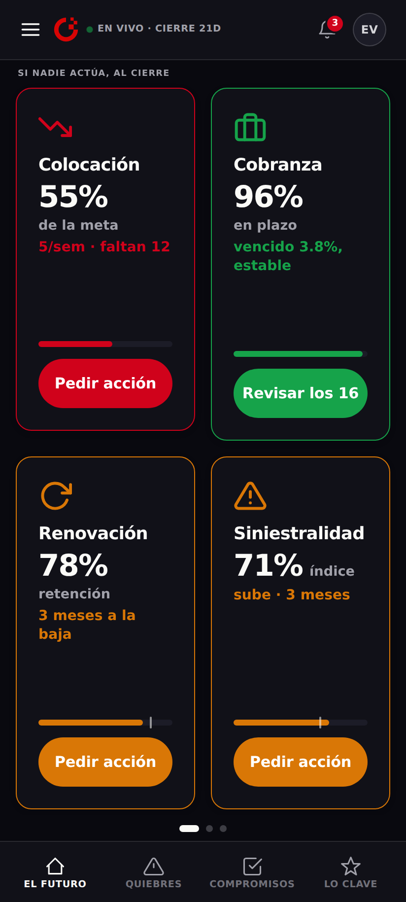
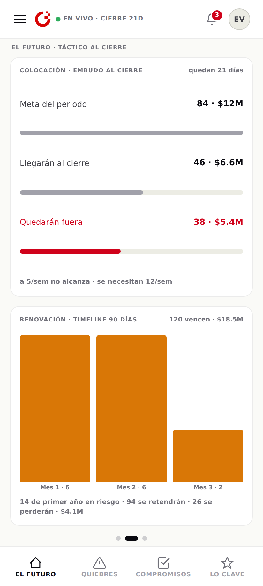
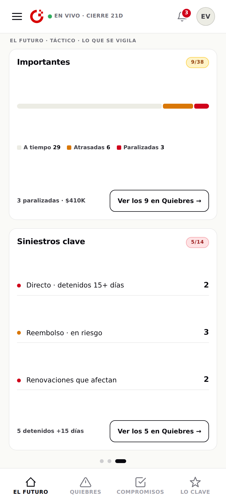
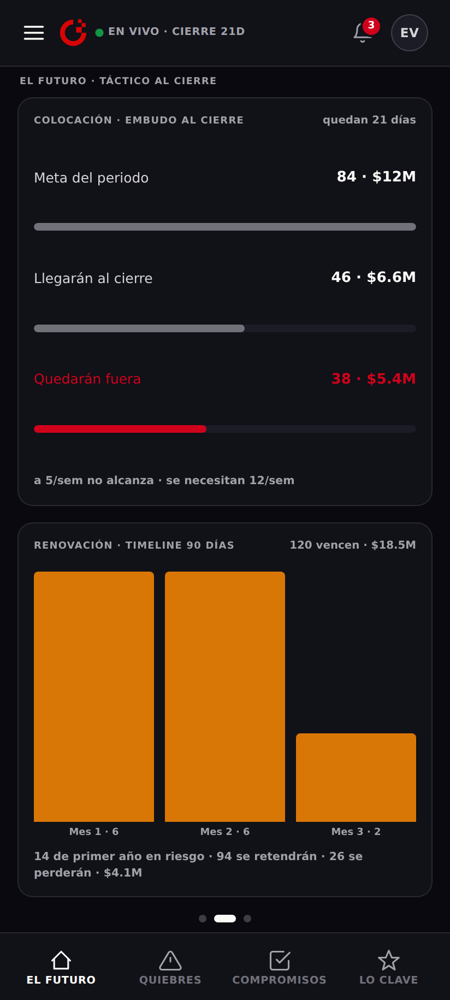
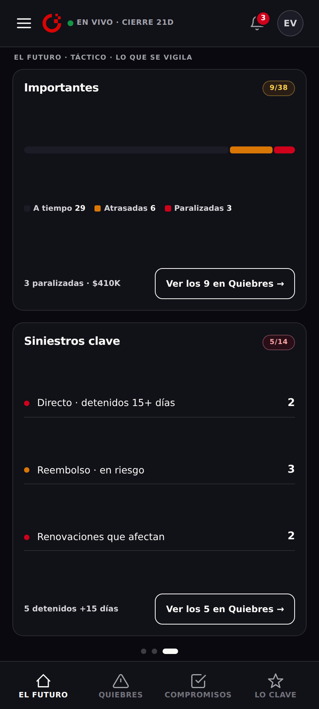
El marco queda fijo y sólo la lista corre. La primera lectura —indicadores 2×2, filtros que se deslizan, y el primer quiebre completo— cabe en el iPhone SE sin tocar nada. Cada fila lleva su acto visible, con el color que sigue al estado; el chip de situación sube a la línea del plazo. Las siete filas, los datos del escritorio.
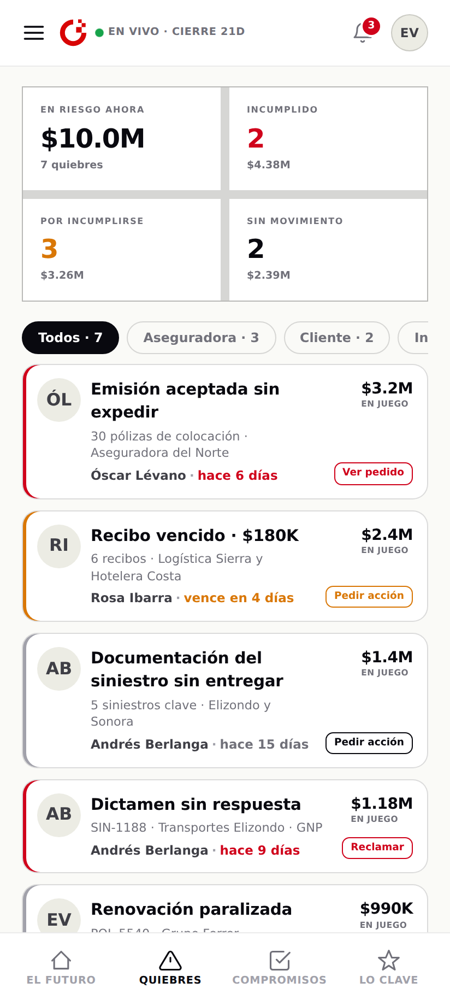
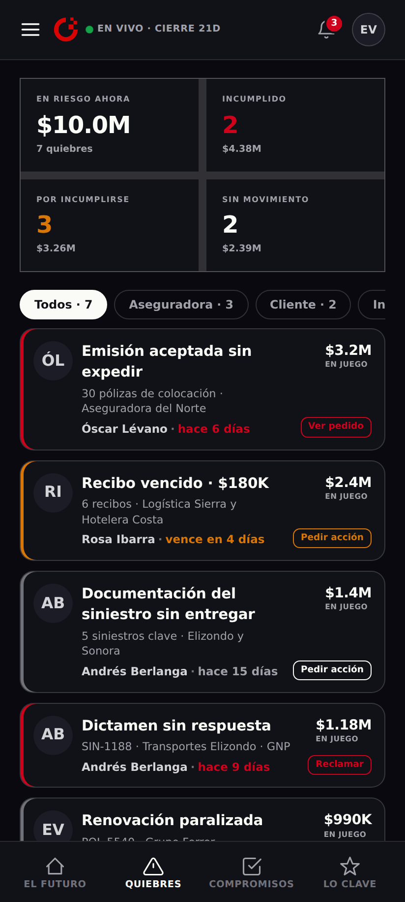
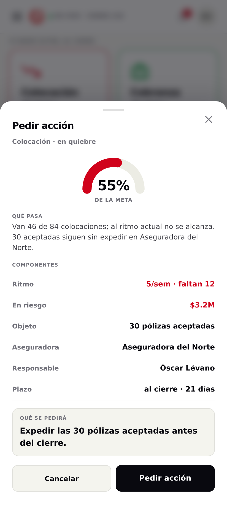
Medida con el viewport visible real (visualViewport). El tile airoso de «Mi Semana» no cabe comprimido en una celda de 2×2 corta sin recortar el botón —y comprimir el aire es justo lo que se veía de juguete—. Por eso la grilla se adapta (minmax(min-content, 1fr)): en el teléfono alto llena la pantalla sin scroll; en el corto guarda el alto airoso y la entrada se desplaza —como la propia «Mi Semana»—, sin recortar nunca el botón (recortes = 0 en toda la gama). «Scroll» es cuánto se desplaza la entrada en vertical.
| Dispositivo | Viewport | Área segura ↑/↓ | El Futuro · scroll | Botón recortado | Quiebres · margen fila 1 | Veredicto |
|---|---|---|---|---|---|---|
| iPhone 13 mini | 375 × 812 | 44 / 34 | 0 px | no | +294 px | Llena · sin scroll |
| iPhone 15 / 16 | 393 × 852 | 59 / 34 | 0 px | no | +334 px | Llena · sin scroll |
| iPhone 16 Pro Max | 440 × 956 | 62 / 34 | 0 px | no | +459 px | Llena · sin scroll |
| Pixel 8 (Android) | 412 × 915 | 24 / 24 | 0 px | no | +397 px | Llena · sin scroll |
| Pixel · con barras* | 412 × 780 | — / — | 1 px | no | +262 px | Llena · sin scroll |
| Galaxy S8 (Android) | 360 × 740 | 24 / 24 | 0 px | no | +202 px | Llena · sin scroll |
| iPhone SE | 375 × 667 | 20 / 0 | +30 px | no | +149 px | Airosa · se desplaza |
| iPhone SE · barras* | 375 × 553 | 0 / 0 | +152 px | no | +35 px | Airosa · se desplaza |
El aire, intacto; nada se recorta. Toda la gama moderna —incluido el teléfono del dueño (Pixel, 780–915) y hasta el Galaxy S8 (740)— llena la pantalla sin scroll, con las tarjetas airosas. Sólo los dos equipos realmente cortos (iPhone SE 667 y con barras 553) se desplazan (+30 y +152 px), conservando el mismo tile airoso —como la propia «Mi Semana», que también se desplaza—, en vez de comprimirlo a tamaño de juguete. El botón-píldora no se recorta en ningún caso.
Quiebres cabe con margen en todos (el peor, SE con barras: +35 px), porque la lista se desplaza dentro de su zona por diseño.
* El límite, declarado: la emulación de WebKit headless no reproduce las barras dinámicas de Safari/Chrome; rinde a viewport completo. Las filas «con barras» se rindieron a una altura reducida (≈ el viewport con barras) como prueba. La confirmación final se hace en equipo real.
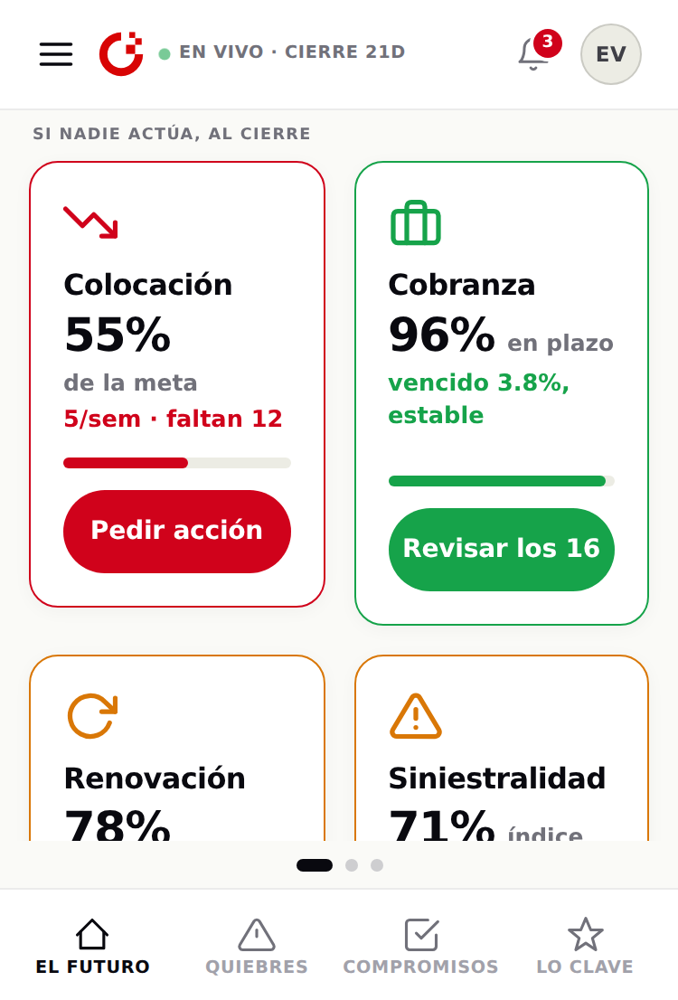
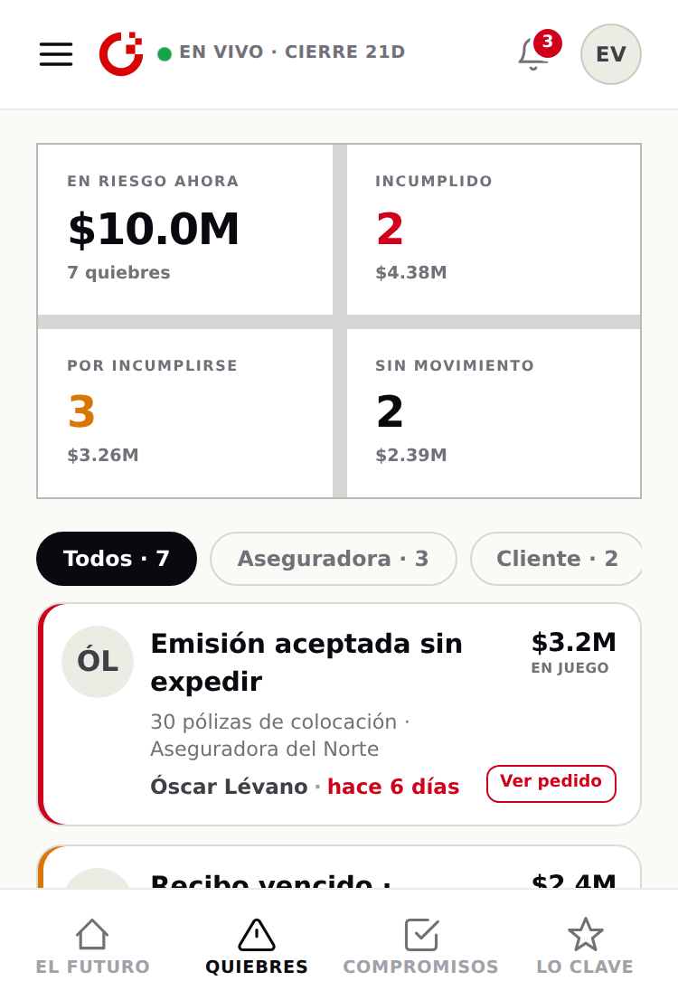
Lo que existe, traído verbatim; lo nuevo, declarado.
.app/.sa/.appbar/.bnav, la hoja .ovl + .modal, las formas .kpi · .vd-cli · .chip · .memb-chip · .ord-filtro; el semáforo del tile sigue casa.css .card.alert/.good/.warn
Color = significado (semáforo de cumplimiento). Cada tile revela su estado en varios canales a la vez —borde, ícono, barra y botón relleno—, no sólo en matiz: rojo quiebre, ámbar advertencia, verde sano; el dinero y el activo de la nav en tinta; en oscuro el rojo de texto usa su variante AA. El ícono de marca va en su rojo de kit verbatim (es marca, no texto). La barra de decisión del pie se retiró (redundante con el acto de cada tile).
El responsable. En 375 px no caben nombre + chip + plazo + acto + peso en la fila; el responsable lo lleva el avatar (iniciales) y la hoja de detalle muestra el nombre completo. Chip y plazo quedan siempre visibles.
Carbon. La grilla sigue siendo la de pantalla chica (4 columnas, relleno 16, breakpoint Small, verificada en el MCP). La hoja pegada al borde inferior sigue a Carbon · Modal · Mobile (verificada en el MCP) y además es la .modal de la casa.